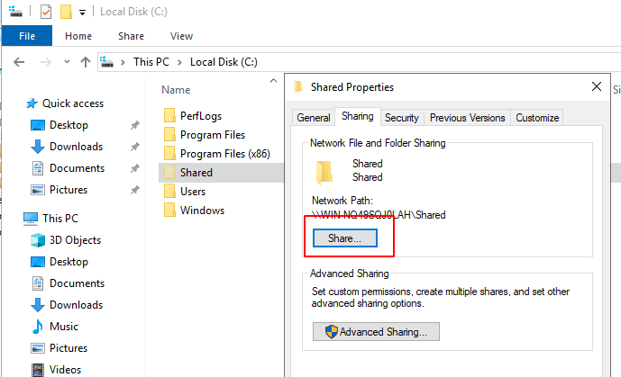
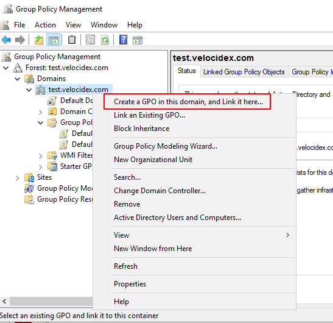
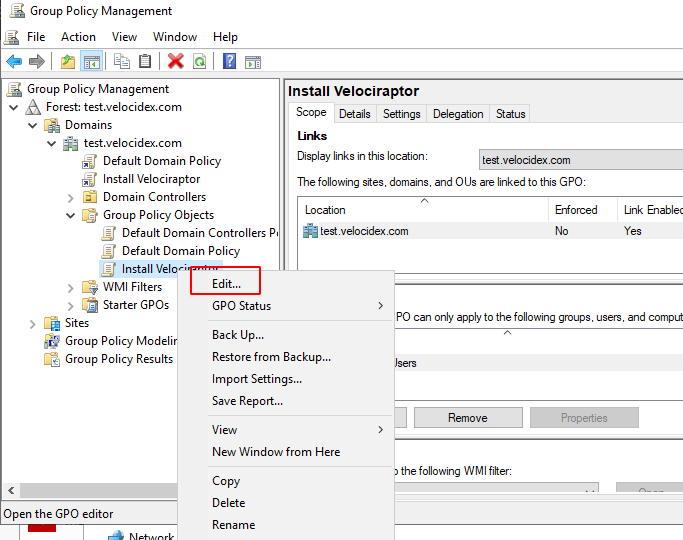

<!-- .slide: class="title" --> # Configuring Clients <img src="taming_velociraptors.png" class="fixed" style="right: 0px; z-index: -10;"/> --- <!-- .slide: class="content" --> ## Deploying clients - Windows * We typically distribute signed MSI packages which include the client’s config file inside them. This makes it easier to deploy as there is only one package to install. * Velociraptor can create the MSI to target the correct Org using the `Server.Utils.CreateMSI` artifact. --- <!-- .slide: class="content optional" data-background-color="antiquewhite" --> ## Domain deployment We can deploy the MSI to the entire domain using group policy. Two Methods: 1. Via scheduled tasks. 2. Via assigned software. --- <!-- .slide: class="content optional" data-background-color="antiquewhite" --> ## Domain deployment: Scheduled Task Create a share to serve the MSI from. <div style="text-align: center;">  </div> --- <!-- .slide: class="content optional" data-background-color="antiquewhite" --> ## Domain deployment: Scheduled Task Ensure everyone has read access from this share - and only administrators have write access! <div style="text-align: center;"> <img src="setting_share_permissions.png" class="mid-height"> </div> --- <!-- .slide: class="full_screen_diagram small-font" data-background-color="antiquewhite" --> ## Domain deployment: Scheduled Task Use the group policy management tool create a new Group Policy Object in the domain (or OU) <div style="text-align: center;">  </div> --- <!-- .slide: class="full_screen_diagram small-font" data-background-color="antiquewhite" --> ## Domain deployment: Scheduled Task Edit the new GPO <div style="text-align: center;">  </div> --- <!-- .slide: class="full_screen_diagram small-font" data-background-color="antiquewhite" --> ## Domain deployment: Scheduled Task <div style="text-align: center;"> <img src="editing_gpo_1.png" class="mid-height"> </div> --- <!-- .slide: class="full_screen_diagram small-font" data-background-color="antiquewhite" --> ## Domain deployment: Scheduled Task Ensure the new scheduled task is run as system <div style="text-align: center;"> <img src="editing_gpo_2.png" class="mid-height"> </div> --- <!-- .slide: class="full_screen_diagram small-font" data-background-color="antiquewhite" --> ## Domain deployment: Scheduled Task Using scheduled tasks you can run any binary - use this method to run interactive collection if you do not have a dedicated Velociraptor server <div style="text-align: center;"> <img src="editing_gpo_new_action.png" class="mid-height"> </div> --- <!-- .slide: class="full_screen_diagram small-font" data-background-color="antiquewhite" --> ## Domain deployment: Scheduled Task Ensure the new scheduled task is run only once <div style="text-align: center;"> <img src="editing_gpo_run_once.png" class="mid-height"> </div> --- <!-- .slide: class="full_screen_diagram small-font" data-background-color="antiquewhite" --> ## Domain deployment: Assigned Software Method 2: install via assigned software packages in GPO. The main advantage here is that it is possible to upgrade or uninstall Velociraptor easily <div style="text-align: center;"> <img src="editing_gpo_assigned_software.png" class="mid-height"> </div> --- <!-- .slide: class="full_screen_diagram small-font" data-background-color="antiquewhite" --> ## Domain deployment: Assigned Software You will need to wait until group policy is updated on the endpoint or until the next reboot. The endpoint must be on the AD LAN <div style="text-align: center;"> <img src="editing_gpo_assigned_software_2.png" class="mid-height"> </div>